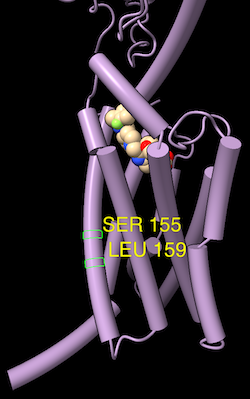

|  |
 |
| Profile grid of the PFAM 7 transmembrane receptor (Secretin family) seed alignment associated with a structure of the glucagon-like peptide-1 receptor, PDB 7LCJ. Two residues with 100% type conservation are selected and labeled. |
Profile Grid shows a condensed view of a multiple sequence alignment in which the rows are the possible sequence characters (residue one-letter codes and gap), the columns are positions in the alignment (as in the standard view of a sequence alignment), and the values in the cells are the prevalences of that type of residue at that position.
Profile Grid is a reimplementation of the viewer developed by Alberto Roca, as described in:
ProfileGrids: a sequence alignment visualization paradigm that avoids the limitations of Sequence Logos. Roca AI. BMC Proc. 2014 Aug 28;8(Suppl 2 Proceedings of the 3rd Annual Symposium on Biologica):S6.
The values in the ChimeraX Profile Grid are percentages rounded to the nearest integer. A blank cell means that no sequences at all have that residue type at that position, whereas a displayed value of 0 means that some do, but <0.5%. Much like the Sequence Viewer, the Profile Grid tool interacts with any associated structures, and it can include headers above the sequence data.
Opening a sequence alignment file with the open command option viewer grid shows it as a Profile Grid. Multiple Profile Grid windows can be shown at the same time, and they can be manipulated like other panels in ChimeraX (more...).
A Mouse click can interact with the grid cells in either of two ways, as specified near the bottom of the window:
Either way, cell status can be toggled or the cell added to the existing set of highlighted/chosen cells with Shift-click.
Context Menu
Settings
The Profile Grid context menu includes:
Choosing Settings... from the Profile Grid context menu with sections:
The settings window can be manipulated like other panels in the ChimeraX interface (more...).
Save saves the current settings as preferences, Reset replaces the current settings with the initial “factory” defaults (values shown in bold below), and Restore restores values that were saved previously. The Buttons below... option indicates whether these buttons should apply only to the currently shown section (e.g., Appearance) or to all of the Profile Grid preferences. Although there can be multiple settings windows with different values for multiple Profile Grid windows, there can be only one set of saved preference values.
← Appearance – grid cell contents
← Headers – rows of information above the grid of residues (more...)
AL2CO: calculation of positional conservation in a protein sequence alignment. Pei J, Grishin NV. Bioinformatics. 2001 Aug;17(8):700-12.Conservation values from AL2CO are in standard deviations from the mean (Z-scores) and can range from –∞ (least conserved) to +∞ (most conserved). For purposes of histogram display only, the values are mapped to bar heights 0-1, with conservation values of zero giving a histogram bar height of 0.5.
When more than one chain per model is associated with the same alignment, the RMSD calculation uses only the chain that gives the lowest overall RMSD.